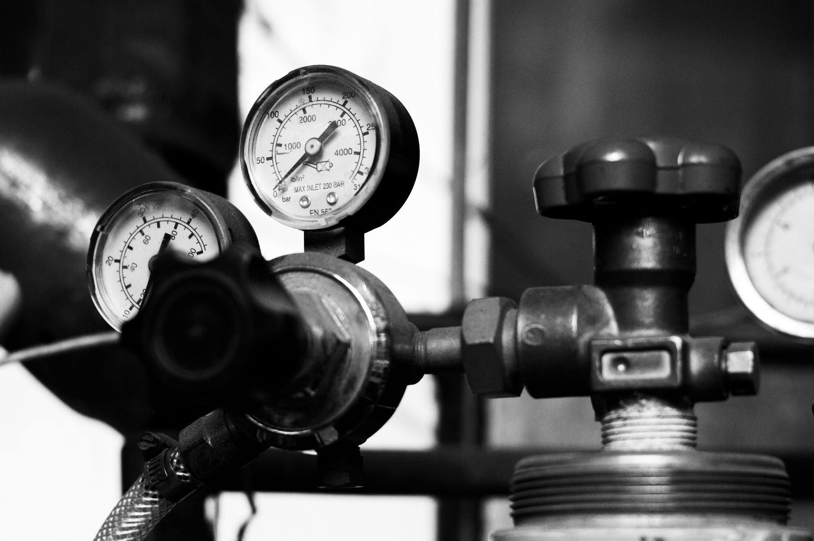
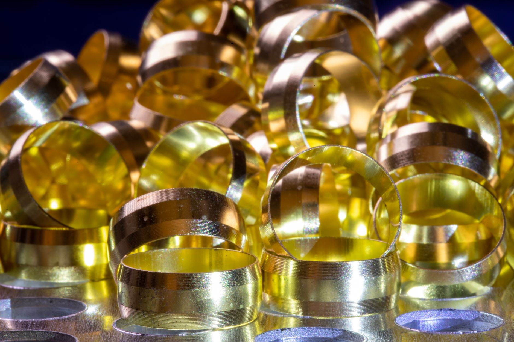
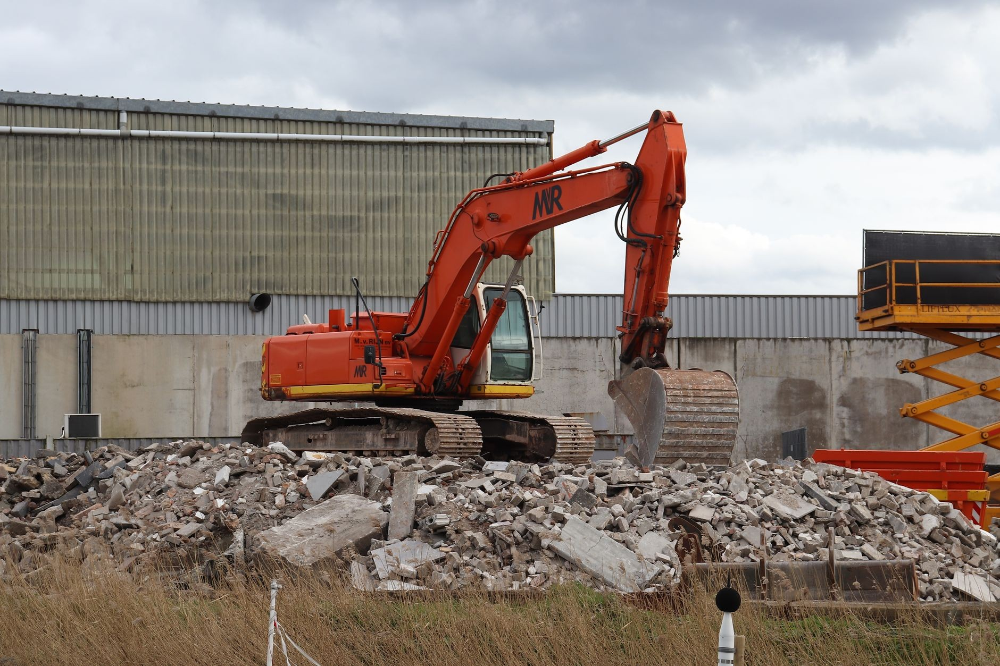
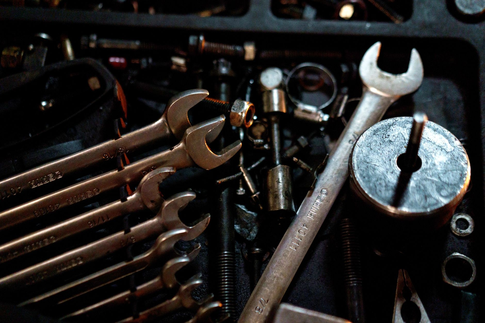

Co robimy
Zakuwanie przewodów hydraulicznych
Wąż pękł w ciągniku, koparce albo wózku widłowym? Przywieź stary przewód, a dorobimy nowy w tej samej długości i z tymi samymi końcówkami.

01
Zakuwanie węży wysokociśnieniowych
Nowy przewód z zakutymi końcówkami - do maszyn rolniczych, budowlanych i wózków widłowych.
02
Przewód na wzór uszkodzonego
Przywieź stary wąż - zmierzymy długość, sprawdzimy gwinty i dorobimy taki sam.

03
Dobór końcówek i złączek
Dobieramy końcówki pod gniazdo w maszynie. Powiedz, do czego jest przewód, a podpowiemy, która pasuje.

04
Pilne zakucie po godzinach
Maszyna stanęła wieczorem? Zadzwoń - klienci w opiniach piszą, że otwieramy zakład także po 19:00.
Współpraca
Która z usług Cię interesuje?
Zadzwoń albo napisz, jaki przewód trzeba dorobić - podamy cenę.